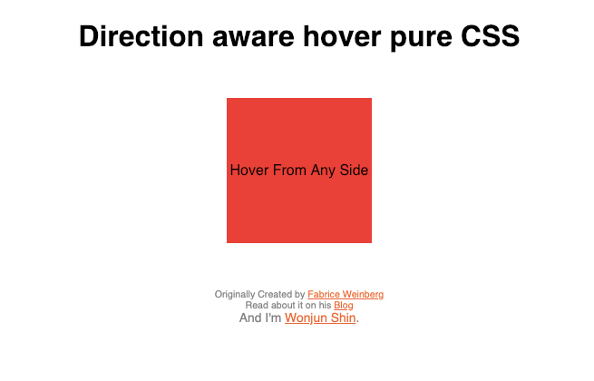
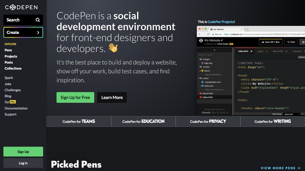

 clone coding Direction aware hover pure CSS - Codepen.io 클론 코딩 Codepen.io-The Most Hearted of 2013 - 100. Direction aware hover pure CSS 이번 펜은 마우스가 올라올 때 들어온 방향을 감지하는 Element를 JS 없이 CSS로만 구현하였다. 아래는 Codepen에 올라온 원본이다.See the Pen
 clone coding Preface - Codepen.io 클론 코딩 Codepen.io라는 사이트는 "Front End Developer Playground & Code Editor in the Browser"라는 소개글 자체로 알 수 있듯, 다양한 프론트엔드 코드들을 공유하고 갖고놀 수 있는 공간이다.Codepen.io 메인 페이지 공유된 코드들은